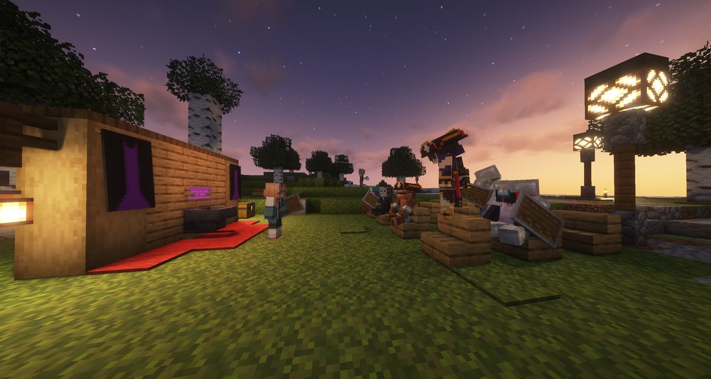
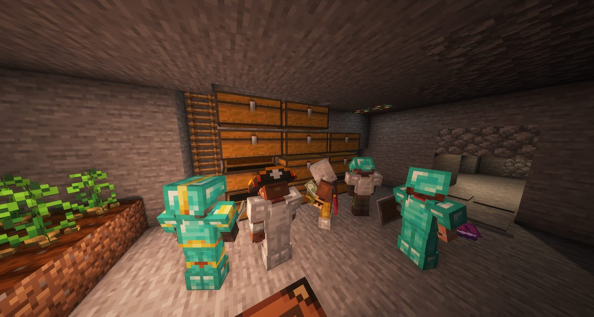
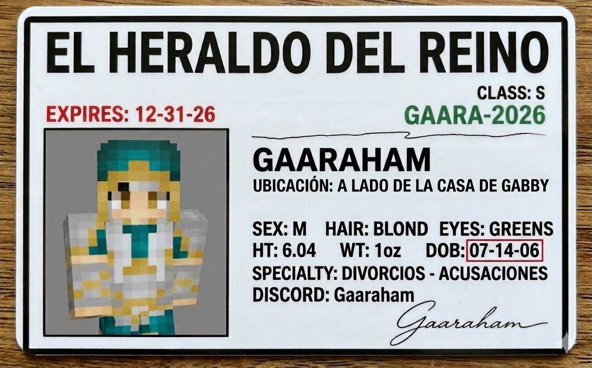
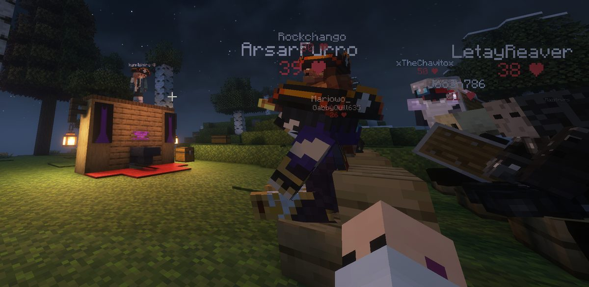

Boletín Oficial del Ayuntamiento del Reino · Se informa, no se alarma
EL HERALDO DEL REINO
Número 166 de septiembre de 2026Tarde del domingo 6 de septiembre a la mañana del lunes 7
LA PRIMERA CARTA QUE RECIBE LA POLICÍA DEL REINO ES DE AMOR
Llegó sin remite, dirigida a la Encargada del Orden y con una fotografía pegada: el loro Dwem, de pie, con su chapa. Este Heraldo lo publicó como muerto el 3 de septiembre. La carta la llama «mi querida capitana», habla del animal en presente y sólo pide una cosa: que no meta a más gente en el juego. Se recibió doce horas después de que el vecindario la eligiera por unanimidad.
Redactado por la Oficina de Prensa del Ayuntamiento
PORTADA
«Que nuestro juego sea eterno»: la carta que llegó a esta redacción con una fotografía dentro
Recibió esta Oficina, para su publicación y dirigida a la Encargada del Orden, una
carta sin remite. No la firma nadie. No trae fecha. Viene acompañada de una fotografía
y de la petición expresa de que se imprima.
Esta casa la imprime. No porque le parezca bien, sino porque un documento que se manda a
un periódico para que lo lea el vecindario ya no es un asunto privado, y porque el
procedimiento de esta Oficina ante un papel anónimo es siempre el mismo: reproducirlo,
transcribirlo y no interpretarlo. Lo que sigue es el papel tal y como llegó.
ARCHIVO PRUEBA N.º 1
lo que venía pegado
Mi querida capitana de policía, mi amor
Por ti ejerce más que 5000 montañas, y el fervor de tu
búsqueda hace que mi corazón lata a 5 latidos por micro segundo.
Pero me duele, que quieras meter a más gente
en nuestros juegos...
Por eso permíteme saber si sientes lo mismo que yo, que nuestro juego sea
eterno, soy impaciente y Dwen también.
— sin firma —
🖋️ Transcripción de esta Oficina. Se compone con la ortografía puesta, como se
compone todo en esta casa, y sin cambiar ni una palabra ni el orden en que están. La
redacción es la del original.
«Mi querida capitana de policía, mi amor. Por ti ejerce más que 5000 montañas, y el
fervor de tu búsqueda hace que mi corazón lata a 5 latidos por micro segundo. Pero me
duele, que quieras meter a más gente en nuestros juegos... Por eso permíteme saber si
sientes lo mismo que yo, que nuestro juego sea eterno, soy impaciente y Dwen también.»
Se respeta la redacción del original, incluida la frase de las cinco mil
montañas, que esta Oficina ha leído nueve veces y sigue sin saber qué quiere decir.
Lo que la carta pide, dicho en claro. Pide dos cosas y sólo dos. La primera es que
la destinataria conteste. La segunda, y es la que a esta corporación le parece que hay que
subrayar, es que el asunto no se comparta con nadie más: «me duele, que quieras
meter a más gente en nuestros juegos». Se recibe doce horas después de que el
vecindario votara constituir un cuerpo de tres personas.
Y lo que venía pegado. Una fotografía, sujeta al papel y sin recortar. Se ve
un loro verde posado en el suelo, sobre él una chapa que pone Dwem, y detrás una
pared con dos huecos oscuros alineados sobre un suelo de piedra clara. Esta Oficina
no ha identificado el lugar y no se atreve a suponerlo.
Lo que sí hace, porque lleva el archivo y para eso lo lleva, es hacer constar que el
animal de esa fotografía figura como fallecido en el número 12 de este Heraldo, por
denuncia de su propietaria del 3 de septiembre a las 04:58. Y que no hay nada más en el
sobre: ni una exigencia, ni una cantidad, ni una instrucción sobre dónde dejar nada. Es lo
único que separa una carta de secuestro de una carta de amor con una fotografía dentro,
y la que ha llegado no pide rescate.
El asunto se remite íntegro al pliego de la Comisaría, que es de donde tenía que haber
salido y no de aquí. Esta casa no acusa a nadie, no sabe quién escribe y no ha querido
averiguarlo: eso ya no le toca a un periódico.
ADMINISTRACIÓN
El Reino se dio autoridad por unanimidad, y para el segundo puesto hicieron falta cuatro votaciones

El acto, a las 21:50, fotografiado por el Ministerio. A la izquierda, la alfombra roja y el estrado con cortinas moradas; en el centro, la candidatura de pie, exponiendo. A la derecha, el vecindario sentado en bancos de madera con los escudos apoyados en las rodillas. Cuéntense los escudos.
Archivo Municipal · pase el ratón para revelarla
A las 20:44 del domingo, el Ministerio anunció que la votación era en veinte
minutos. A las 22:49 publicó el resultado. Entre una hora y otra, el Reino pasó de
tener cero responsables del orden a tener dos, que es todo el crecimiento
institucional registrado en este pueblo desde que existe.
Encargada del Orden: GabbyQuill635, elegida por unanimidad. La resolución
ministerial subraya que salió «sin necesidad de recuentos, reclamaciones ni desapariciones
sospechosas de papeletas», tres cosas que nadie había mencionado hasta que las mencionó
la propia resolución.
Ayudante del Orden: Jooan786, y aquí el papel costó más. Hicieron falta
cuatro votaciones consecutivas, varios empates y una cantidad de papeleta que, según
el Ministerio, no estaba presupuestada. A las 20:07, cuando aún faltaba hora y
media para el resultado oficial, LetayReaver ya lo había proclamado en la plaza:
«gano joan», y a continuación «bravooo».
La candidatura derrotada fue la de kum4shiro, que llevaba desde el 3 de septiembre
pidiendo el cuerpo y había hecho la única campaña con cartel, lema y programa de cárcel. El
Ministerio lo retrató a las 21:45 cantando, según el pie, «antes de su
explicación». La reacción del vecindario al conocerse el resultado la resume
Webiwabo2.0 a las 22:55 en el tablón: «menos mal kumashiro no gano», seguido
de «gg ez». El interesado contestó con dos palabras que esta Oficina no reproduce.
Rockchango puso el epitafio a las 22:56: «Hoy fue un día histórico para la
democracia y soberanía del reino». Y lo fue: es el primer cargo que este pueblo cubre
votando, después de catorce jornadas imprimiendo en este mismo sitio que los agentes
nombrados eran cero.
SUCESOS
A la autoridad recién elegida la abatieron dos veces durante su propia elección, y las dos fue el mismo vecino
Esta Oficina publicaría de mejor gana el artículo anterior si no tuviera delante el registro
de bajas de esa misma hora. Lo tiene, así que lo publica.
A las 21:14, con el acto en marcha, LetayReaver acabó con GabbyQuill635
y con Jooan786, es decir, con las dos personas que noventa minutos después serían la
Encargada del Orden y su Ayudante. A las 21:42 repitió, y repitió a lo grande:
Mazitrvrs, Jooan786, Cliqueame, GabbyQuill635 y Rockchango,
los cinco dentro del mismo minuto. A las 21:43 añadió a Mariowo_.
Siete vecinos en dos minutos, y entre ellos las dos autoridades del Reino, dos veces
cada una. En el intervalo, a las 21:14, ArsarFurro había acabado con el propio
LetayReaver, que volvió. Después siguieron Demaxxp, Jooan786 y kum4shiro
turnándose hasta las 22:26. El recuento de la jornada quedó en cincuenta y cinco
defunciones, de las cuales dieciocho las causó un vecino a otro.
Gaaraham03, que estaba mirando, lo registró a las 20:24 con una frase que esta
Oficina reproduce por su valor de acta: «Y así quieres ser policías que vergüenza». Y
a las 20:47, Webiwabo2.0 dejó por escrito un propósito de continuidad: «y seguire
matando a Kumashiro».
Esta corporación no adopta ninguna medida. Hace notar únicamente que la porra
paralizante que el cartel prometía a los cargos electos se entrega después de la votación,
y que durante la votación no la tenía nadie.
SUCESOS
Se abrió la casa del vecino ausente a la hora anunciada y se vació en el tiempo de una fotografía

El sótano de la vivienda a las 20:16, según el Ministerio. Al fondo, la pared de arcones; delante, cinco vecinos con armadura de diamante y de hierro. A la izquierda siguen creciendo los cultivos del propietario, que nadie tocó. El pie con que se publicó constaba de dos palabras y esta Oficina prefiere no repetirlas.
Archivo Municipal · pase el ratón para revelarla
A las 20:01 el Ministerio avisó de que en diez minutos se retiraban las protecciones
de la vivienda y los arcones de nikito338800, y calificó la operación, textualmente, de
redistribución patrimonial de emergencia, «que es lo mismo pero con peor conciencia
y mejor sello». Se rogaba acudir «con orden, rapidez y una cantidad razonable de
vergüenza».
Se acudió con lo primero y con lo segundo. A las 20:16, quince minutos después del
aviso y cinco después de la apertura, la fotografía del sótano ya enseña la pared de arcones
rodeada. El propietario, se recuerda, es el mismo al que esta corporación declaró la vivienda
en abandono cinco horas después de que pisara el Reino durante veintisiete segundos.
El Negociado de Patrimonio da el asunto por concluido y no abre expediente, porque el
expediente lo abrió esta administración y lo cerró ella sola el mismo día.
SOCIEDAD
Diez horas después de existir la policía, el Reino tuvo su primer abogado, y se expidió el carné él mismo

La credencial que Gaaraham03 hizo circular a las 08:28. Lleva la cabecera de este Heraldo, que no la ha expedido. En el apartado ESPECIALIDAD pone «DIVORCIOS — ACUSACIONES»; en UBICACIÓN, «al lado de la casa de Gabby». El peso declarado es de una onza.
Archivo Municipal · pase el ratón para revelarla
Los cargos se proclamaron a las 22:49 del domingo. A las 08:28 del lunes —diez horas
después, y sin que conste que la autoridad hubiera hecho todavía nada— Gaaraham03
publicó en el tablón vecinal una credencial con fotografía y este ofrecimiento:
«La nueva policía [...] abusa de su poder, no te preocupes, nosotros te protegemos,
defiendo tus derechos, evito que te quiten el inventario y te saco de prisión en
minutos».
Esta Oficina tiene que hacer dos precisiones, y las hace en el orden en que le
duelen.
Primera, y es de la casa. La credencial va impresa con la cabecera de este
Heraldo, en letra grande y arriba del todo. Este periódico no expide credenciales,
no ha expedido ésa y no tiene abogados. Se hace constar sin acritud y con cierta admiración
por el acabado, que es mejor que el de cualquier documento que salga de esta administración.
Segunda, y es del Reino. El Centro Municipal de Reconsideración lleva doce
jornadas con cero reclusos y con cero puertas que cierren. Ofrecer sacar a alguien de él
«en minutos» es, a día de hoy, una promesa que se cumple sola.
Queda por tanto el Reino con una Encargada del Orden, un Ayudante, un
abogado defensor y ningún preso, en ese orden de aparición y en menos de doce
horas. El vecino ArsarFurro había resumido la situación a las 04:32, cuando todavía no
existía la mitad de esa lista, al publicar una fotografía del Pipas con este pie:
«haciendo justicia por mano propia debido a la ausencia de los policías».
PADRÓN
Cincuenta y cinco defunciones, ningún alta y un vecino que se murió dieciséis veces él solo
Cierra la jornada con cincuenta y cinco defunciones, veinticinco más que la
anterior, y con ningún alta tramitada. Entraron veinte cuentas —dieciocho vecinos
y dos de esta administración— y la máxima concurrencia fueron doce a la vez, a las
21:05, es decir, en plena votación: es la mayor cifra registrada en este Heraldo.
El primer puesto de la lista de bajas lo firma Demaxxp con dieciséis, que es
casi un tercio del total de la jornada él solo. Le siguen kum4shiro con ocho —de las
cuales cuatro se las causaron otros vecinos, cosa que no le pasa a nadie más— y la propia
GabbyQuill635 con seis, en la misma noche en que fue elegida por unanimidad.
En el capítulo de causas hay novedad y no es buena. La primera causa de muerte del Reino
ya no es un bicho: es un vecino. LetayReaver acumula ocho, por delante de la caída
desde altura (siete) y de la Bicha del granero (cinco), que llevaba semanas ganando sin
esfuerzo. Aparecen además, por primera vez en este parte, el Pirata Camorrista y el
Pirata Hachero, con dos cada uno, y un Piglin quemado con cuatro.
SERVICIOS
El parte del pulso: la caña que no contaba, el mostrador del refugio y un cartel en otro idioma
La caña que no contaba. A las 06:31, Agustin.F comunicó que llevaba
más de cinco lances y que el encargo del muelle no le avanzaba. Tenía razón y el motivo no era
suyo: cada cierre técnico por revisión del pulso le ponía la cuenta a cero, de modo que
quien pescaba a caballo entre dos cierres no llegaba nunca. Queda corregido de raíz: la cuenta
ya no se borra. Se le comunicó a las 10:29.
El mostrador del refugio. Se abrió por fin la adopción de animales en la casa de
Nico, en Villa Villez, con un encargo corto que la franquea y con las tarifas
rebajadas a menos de la mitad: la más barata queda en cien Cacahuates. Consta
además que quien perdiera la correa puede reponerla allí mismo, extremo que hasta ahora no
estaba previsto en ninguna ordenanza y que dejaba al animal adoptado en su jaula y sin manera
de sacarlo.
Lo demás, en un párrafo. Se rectificó un cartel del muelle que estaba redactado en
un idioma que aquí no habla nadie · se aclaró el frasco de la Alquimista, que se encendía y no
hacía nada · y se atendieron cuatro comunicaciones más del vecindario, todas del mismo vecino
de alta reciente, que lleva dos jornadas encontrando él solo más averías que esta
administración entera.
Fátima no acudió a su puesto. Van catorce jornadas. Don Clocencio cumple
doce preso sin fecha de juicio, y ahora además con un abogado disponible al lado de la
casa de la Encargada del Orden. Lagomorfos avistados: 0, por decimocuarta jornada
consecutiva.
Negociado de Orden y Convivencia · pliego segundo
LA COMISARÍA DEL REINO
Con dos cargos electos, un abogado sin colegiar y ningún preso al que defender
Sale este pliego por segunda vez, y sale con novedad: por primera vez desde que se abrió, el Reino tiene autoridad elegida. Se constituyó anoche por votación y esta misma mañana ha recibido su primer documento. No es una denuncia: es una carta dirigida a ella y mandada a este periódico para que se publique.
Expediente segundo de la Comisaría · abierto el 7 de septiembre
LA CARTA SIN REMITE
Escrito anónimo dirigido a la Encargada del Orden y remitido a esta redacción con una fotografía adjunta. No contiene exigencia económica, ni instrucción, ni plazo. Pide contestación y pide que el asunto no se comparta. La fotografía muestra al loro Dwem, que consta fallecido desde el 3 de septiembre por denuncia de su propietaria, hoy Encargada del Orden. Enlaza con el expediente primero.
Abierto
El cuerpo, y quién responde por cada uno
GabbyQuill635Encargada del OrdenAvalado por El vecindario, por unanimidad, el 6 de septiembre. Es a la vez la autoridad del Reino y la perjudicada de los dos expedientes: seis episodios contra su casa desde el 27 de agosto, y es su animal el de la fotografía. Esta Oficina lo hace constar porque es un dato del caso, no un reproche.
Jooan786Ayudante del OrdenAvalado por El vecindario, en la cuarta votación, el 6 de septiembre. Tomó posesión a las 22:49 y para entonces ya había sido abatido cuatro veces esa misma noche, dos de ellas por el mismo vecino y durante el acto de su elección.
kum4shiroAspirante · candidatura derrotadaAvalado por Se ofreció el 3 de septiembre; no obtuvo el cargo. Mantiene su programa, su cartel y sus ideas para el Centro de Reconsideración. Es el único que llevaba dos semanas pidiendo que esto existiera.
Cómo fue, por horas
20:44El Ministerio convoca la votación para veinte minutos después.
21:14Con el acto en marcha, LetayReaver abate a GabbyQuill635 y a Jooan786.
21:42Cinco vecinos en un minuto, el mismo autor, y otra vez los dos futuros cargos.
22:49Resultado. Encargada del Orden por unanimidad; Ayudante a la cuarta votación.
08:28Un vecino ofrece defensa jurídica con credencial propia y sin preso al que defender.
—Llega a esta redacción la carta, con la fotografía y con la petición de publicarla.
Lo que obra en poder de la Comisaría
Prueba primera. La fotografía adjunta a la carta. Loro verde, chapa con el nombre Dwem, pared con dos huecos oscuros alineados, suelo de piedra clara. El lugar no está identificado: es lo que este pliego pide al vecindario.
Archivo Municipal · pase el ratón para revelarla
SUCESOS
Las dos cosas que no cuadran en el papel, y son las dos que se ven a simple vista
La primera es una letra. La carta se despide diciendo «soy impaciente y
Dwen también». La chapa que se lee en la fotografía adjunta pone Dwem. Son
dos nombres distintos separados por una letra, y quien escribe la carta es también quien
manda la fotografía. Esta Comisaría no sabe qué significa. Sí sabe que en un asunto así
una letra es un dato, y la hace constar antes de que se le pase.
La segunda es un tiempo verbal. La carta habla del animal en presente. Consta
en el archivo de este Heraldo, número 12, que el 3 de septiembre a las 04:58 su
propietaria denunció que se lo habían matado, y así se publicó: «animales con
nombre fallecidos: 1». En la fotografía que ha llegado hoy, el animal está de pie.
Esta Comisaría no explica la contradicción. No le corresponde y, sobre todo, no
puede. Lo que hace es imprimir las dos cosas en la misma página y dejar constancia de que
están las dos: consta muerto y está en la fotografía.
SUCESOS
Lo único que se le pide al vecindario, y es mirar una pared
En la fotografía, detrás del animal, hay una pared con dos huecos oscuros alineados y
un suelo de piedra clara. No es el campo. Es el interior de algo, y ese algo lo ha
construido alguien.
Esta Comisaría pide al vecindario que la mire. Quien reconozca esa pared —por el
material, por la disposición de los huecos, por el suelo— que lo diga en el registro. No hace
falta acusar a nadie ni sospechar de nadie: basta con decir dónde se ha visto una pared
igual.
🔎 Y se hace notar, porque es la única lectura que este pliego se permite: la carta pide
expresamente que no se meta «a más gente en nuestros juegos». Esta Comisaría acaba de
pedirle a todo el Reino que mire una fotografía. Las dos cosas van en la misma página, y no
es casualidad que vayan juntas.
Se recuerda por último, y se recordará en todos los pliegos que haga falta, que esta
Comisaría no acusa a ningún vecino, ni aquí ni en ninguna otra página, y que no publica
razonamientos que terminen en un nombre propio. Se ponen los hechos en el orden en que
constan y juzga quien lee.
Esta Comisaría no acusa a ningún vecino, ni aquí ni en ninguna otra página, y no publica deducciones que lleguen a un nombre propio. Tampoco publica en este pliego relación de presencias: no hay nadie señalado, y una tabla de coartadas sin acusación sólo sirve para inventar una. Se ponen los hechos en el orden en que constan y juzga quien lee.
La Comisaría del Reino · con el visto de la Oficina de Prensa
Suplemento electoral · se reparte gratis con este número
LA NOCHE EN QUE EL REINO SE DIO UNA POLICÍA
Catorce jornadas seguidas ha impreso este Heraldo, en el mismo sitio y con el mismo número, que los agentes nombrados por esta corporación eran cero. Anoche dejó de serlo. Dedica esta Oficina el suplemento entero a cómo se hizo, quién se presentó, qué prometía el cargo y qué había en el Reino a la mañana siguiente, que no es exactamente lo que se votó.
Oficina de Prensa · Negociado de Orden y Convivencia
ADMINISTRACIÓN
Se convocó con veinte minutos de aviso y se resolvió en dos horas y cinco
No hubo campaña oficial, no hubo urna y no hubo censo. Hubo un aviso a las 20:44
diciendo que la votación era en veinte minutos, un sitio —la plaza de llegada—, y la
instrucción de que quien quisiera el cargo se presentara allí a exponer delante de
quien hubiera. A las 22:49 el Reino tenía dos responsables del orden. Dos horas y
cinco minutos de principio a fin.
El primer puesto salió limpio: GabbyQuill635, Encargada del Orden por unanimidad.
El segundo costó cuatro votaciones consecutivas y varios empates, hasta que se impuso
Jooan786. El Ministerio lo cifró en una queja presupuestaria: hizo falta «una
cantidad de papel que el Ayuntamiento no tenía presupuestada».
🗳️ Y hay que dejar constancia de una cosa que no se ha vuelto a repetir en el Reino:
se votó a alguien que no se presentó a sí misma. A GabbyQuill635 la propuso
Mariowo_ el 3 de septiembre —«confiable y humilde»— y ella se postuló
dos minutos después de denunciar los carteles clavados en su puerta. El pueblo acabó
dándole por unanimidad el cargo de perseguir a quien se los clavó.
ADMINISTRACIÓN
Cuatro aspirantes, dos candidaturas y un voto nulo emitido dieciséis horas antes de que hubiera urna
La candidatura con más trabajo detrás fue la que perdió.kum4shiro llevaba
desde el 3 de septiembre pidiendo que el cuerpo existiera. Repartió el único cartel de
la campaña —«YA NO MÁS ROBOS · ÚNETE A LA KUMA ARMY»—, escribió el único programa
—quería el cargo porque le habían robado los hornos, el hierro y el lobo, y traía
«múltiples ideas para la cárcel»— y pidió el voto casa por casa. Expuso subido a un
tejado. Perdió.
Los otros dos aspirantes no llegaron a candidatura. De los cuatro que se habían
ofrecido en la madrugada del 3 de septiembre, dos no se presentaron al acto. Y la única
alternativa que se propuso desde el público fue la de NARUMl el día anterior:
«Yo propongo clonazepam de nuevo». El vecino así propuesto no figura en el
padrón, extremo que no impidió que la propuesta se debatiera nueve minutos.
🗳️ El voto nulo llegó antes que la votación. El sábado a las 15:27, es decir
dieciséis horas antes de que hubiera nada que votar, Webiwabo2.0 pidió la lista
de candidatos, la estudió nueve minutos y anunció: «votare... nulo». Al conocerse el
resultado, el mismo vecino lo celebró —«menos mal kumashiro no gano», «gg
ez»— y añadió un propósito para lo que quedaba de noche: «y seguire matando a
Kumashiro».
El acta la cerró Rockchango a las 22:56, y esta Oficina la suscribe sin ironía:
«Hoy fue un día histórico para la democracia y soberanía del reino». Es el primer
cargo que este pueblo cubre votando.
El electorado a las 21:05, con luz todavía. Seis vecinos sentados en bancos de madera, antorchas detrás, y a la derecha el candidato de pie sobre la alfombra roja esperando su turno. Es la mayor concurrencia que ha registrado este Heraldo: doce a la vez.
Archivo Municipal · pase el ratón para revelarla

Las 21:45, ya de noche. kum4shiro expone subido al tejado del estrado, que es más alto que el estrado. Abajo, el público con los números de la vida que le quedaba a cada uno encima del nombre. El Ministerio lo publicó como «cantando, antes de su explicación».
Archivo Municipal · pase el ratón para revelarla
ADMINISTRACIÓN
Lo que trae el cargo: un uniforme que no constaba, una porra que se entrega tarde y ningún sueldo
El cartel prometía tres cosas a quien saliera elegido: uniforme reglamentario,
porra paralizante y cero salario. Las tres se han cumplido, y las tres tienen
su matiz.
El uniforme existía y no constaba. Esta Oficina lo publicó en el número anterior:
la única copia estaba guardada en el único sitio donde no se hacen copias, y no figuraba
en ningún archivo de esta administración hasta la mañana del sábado, que es cuando
alguien se dio cuenta.
La porra se entrega después de votar. Es el orden lógico y es también el motivo de
que, mientras se votaba, los dos futuros cargos fueran abatidos cuatro veces entre los
dos sin nada con que responder. Se detalla en el cuerpo de este número.
Y el sueldo es cero, y nadie lo discutió. Esta corporación quiere subrayarlo porque
es, con diferencia, el dato más notable de toda la jornada: en un pueblo donde se han abierto
siete expedientes por robo, dos por envenenamiento y uno por acoso, cuatro vecinos se
ofrecieron a ponerle orden gratis, y el que más trabajo se tomó en pedirlo se quedó
fuera.
📋 El estado real del cuerpo al cierre de este número. Agentes: 2. Reclusos
en el Centro Municipal de Reconsideración: 0. Puertas de ese Centro que cierran:
0. Denuncias pendientes de instruir que hereda: diez. Y un abogado
defensor que apareció diez horas después con carné propio, para sacar de esa cárcel a
unos presos que no existen.
El parte de la jornada
Duración de la jornada
18 h 16 min, de las 15:33 a las 09:49
Cuentas en el Reino
20 — 18 vecinos y 2 de esta administración
Altas tramitadas
0
Máxima concurrencia
12 a la vez, a las 21:05 — la mayor registrada
Defunciones
55
De ellas, causadas por otro vecino
18
Vecino con más defunciones
Demaxxp, 16
Primera causa de muerte
LetayReaver, 8 — por delante de la caída y de la Bicha
Vecinos abatidos por él en dos minutos
7
Cargos de orden elegidos
2
Jornadas anteriores con cero agentes
14
Votaciones que hizo falta repetir
4, para el segundo puesto
Votos nulos declarados el día antes
1
Veces que abatieron a la Encargada del Orden durante su elección
2
Veces que abatieron a su Ayudante aquella noche
4
Horas entre la proclamación y la primera carta anónima
12
Exigencias económicas que contiene esa carta
0
Fotografías que la acompañan
1
Animales con nombre que aparecen en ella
1 — consta fallecido desde el 3 de septiembre
Letras de diferencia entre el nombre escrito y el de la chapa
1
Abogados defensores
1, sin colegiar y con carné propio
Credenciales expedidas por este Heraldo
0
Credenciales que llevan su cabecera
1
Reclusos en el Centro de Reconsideración
0
Jornadas que lleva vacío
12
Viviendas abiertas al vecindario por abandono
1
Minutos entre el aviso y la fotografía del sótano lleno
15
Cultivos del ausente que alguien tocó
0
Días que avanzó el almanaque
28
Casas robadas desde el 27-ago
5
Robos en esas casas
7
Resueltos
0
Jornadas de Don Clocencio sin fecha de juicio
12
Jornadas de Fátima sin acudir a su puesto
14
Lagomorfos avistados
0, por decimocuarta jornada
Aviso oficial
Habiendo constituido el vecindario, por votación y con esta corporación de testigo, los cargos
de Encargada del Orden y Ayudante del Orden, este Ayuntamiento los reconoce, los
felicita y les recuerda que no tienen salario, extremo que ya figuraba en el cartel y que
nadie discutió, cosa que a esta administración le sigue pareciendo el dato más notable de toda la
jornada.
En cuanto al escrito anónimo que se reproduce en portada, esta corporación hace saber lo
siguiente. Primero, que se ha publicado a petición de quien lo mandó, y que esta casa
publica documentos, no los suscribe. Segundo, que la petición que contiene —que el asunto
no se comparta con nadie— no la puede atender un periódico, porque un periódico es
exactamente lo contrario de eso. Y tercero, que quien quiera dirigirse a la autoridad del
Reino tiene desde anoche a quién dirigirse, con nombre, con cargo y con puesto, y que el
registro sigue abierto para todo el mundo, también para quien escribe sin firmar.
Se ruega por último al vecindario que mire la pared del fondo de la fotografía. Es la
única diligencia que esta Oficina sabe pedir y es, por una vez, una que puede hacer cualquiera.